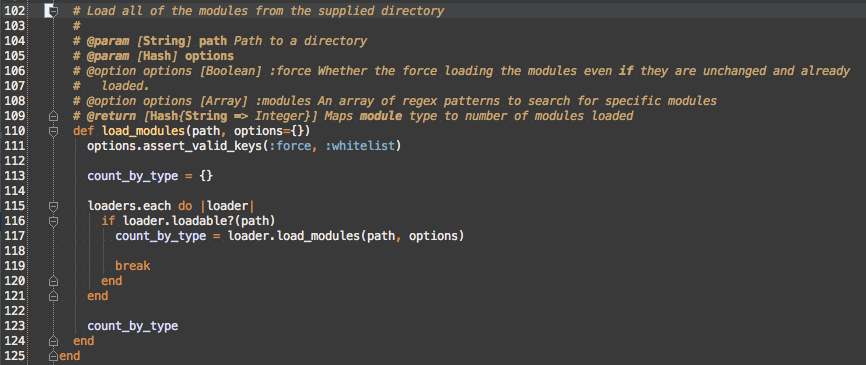
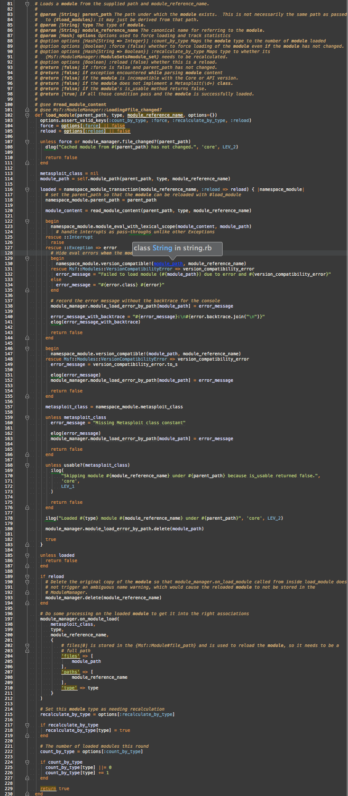
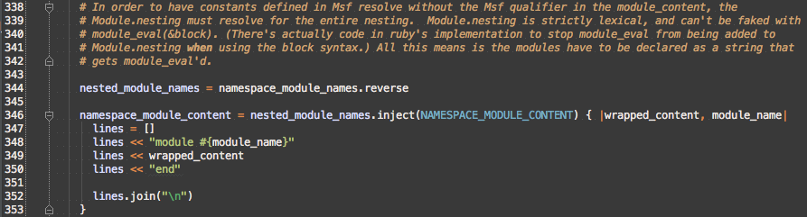
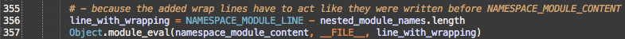

Reading Legacy Code to Harmonize Ruby and Rails Code Loaders
Luke Imhoff
| luke_imhoff@rapid7.com | Kronic.Deth@gmail.com | |
| @limhoff-r7 | @KronicDeth | |
| @KronicDeth |
Background
| Loader | Extension Required | Loads Only Once | Synchrony | Loads |
|---|---|---|---|---|
Kernel.load |
Yes | No | Synchronous | File |
Kernel.require |
No | Yes | Synchronous | File |
Kernel.autoload |
No | Yes | Asynchronous | File |
ActiveSupport::Autoload#autoload |
No | Yes | Asynchronous | File |
ActiveSupport::Dependencies#autoload_paths |
No | Either | Asynchronous | Directory Tree |
Setting
- metasploit-framework: 9 years old (5 ruby / 4 perl)
- Metasploit Pro: 2 years old
- Rails 3.2.2: 5 months old
UI
A standard Rails application
prosvc
daemon UI uses to run metasploit-framework
-
pro
-
engine
- prosvc.rb
- modules (Metasploit Pro Modules)
-
msf3
- modules (Metasploit Framework Modules)
- ui
-
engine
prosvc
it had a few problems
Too long

610 lines
Emulating config.autoload_paths

Adding a new class to UI and prosvc
- Add normally to UI
- Determine which classes have to be loaded before
- Find earliest spot in prosvc to do require
- Add require
- Start prosvc
- Debug load errors
- Goto 2
Goals
- Eliminate
require_relativeinprosvc - Eliminate explicit
requires inprosvc - Share
autoload_pathsbetween UI andprosvc
Tools
- Rails Guides
- Rubygems.org
- Github
ack- Rubymine
Rails Guides
http://guides.rubyonrails.org/
- High-level intros
- Low-level configuration details
Rubygems.org
- Find documentation
- Find source
- Follow dependencies
Github
- Search for code
- Search for issues
-
Software Archaeology
- Branch and Tag viewer
- Following blame and parent commit links
ack
- Like grep, but smarter
- Automatically searches current directory tree
- Ignores .git
- Automatically prints matching lines with line numbers and highlights
Rubymine
Static language tools for dynamic Ruby
- See Ruby Modules/Classes and method in Structure View
- CMD+Click on method to see its definition
- Find usages of method
- Assisted refactoring
- Graphical debugging
config.autoload_paths outside Rails
Barriers to
config.autoload_paths in
prosvc
- Don't know how to use outside of Rails
- Don't know how
config.autoload_pathsworks - Don't know which gem handles
config.autoload_paths
RTF
MG
config.autoload_paths is mentioned in the Configuring guide

Where is
set_autoload_paths?
- Search rubygem.org for rails
- Show all versions
- Find 3.2.2
| Gem | Purpose |
|---|---|
| actionmailer | sending mail |
| activerecord | database records |
| activeresource | non-database records |
| bundler | dependency management |
| actionpack | ? |
| activesupport | ? |
| railties | ? |
Check actionpack, activesupport, and railties
- No Source Links
- Assume rails Source Links

Searching Legacy Code
- Try Github search
- Realize Github search only works on master
- Clone rails
- Checkout 3.2.2
- Search locally
cd ~/git
mkdir rails
cd rails
git clone git@github.com:rails/rails.git
cd rails
git checkout v3.2.2
ack set_autoload_paths
ack set_autoload_path
- Configuring guide source
- DSL call to define initializer

railties/lib/rails/engine.rb:536

_all_autoload_paths

Emulate
set_autoload_paths
-
config.autoload_paths -
config.eager_load_paths -
config.autoload_once_paths
ActiveSupport::Dependencies.autoload_paths.unshift(config.autoload_paths)
Calling initializers without
Rails::Engine
- Initializers are just methods
- Need to emulate calling convention too
Back to the Guide

set_load_path

_all_load_paths

Separating initializers and configuration
| System | Initializers | Configuration |
|---|---|---|
| Rails |
Rails::Engine
|
Rails::Engine::Configuration
|
| prosvc |
Metasploit::Configured
|
Metasploit::Configuration
|
require 'active_support/concern'
# TODO this should be a Rails::Engine if engine is ever moved under ui
module Metasploit::Configured
extend ActiveSupport::Concern
module ClassMethods
def configuration
@configuration ||= self::Configuration.new
end
def initialize!
configuration.initializers.each do |initializer|
send(initializer)
end
end
def eager_load!
configuration.dependencies.each(&:eager_load!)
# Adapted from Rails::Engine#eager_load!
configuration.eager_load_paths.each do |load_path|
# strip the load_path itself from the name because the load_path is already add to $LOAD_PATH by
# {#set_load_path}.
# strip extension as it's not normally passed to require.
require_path_regex = /\A#{Regexp.escape(load_path)}\/(.*)\.rb\Z/
glob = "#{load_path}/**/*.rb"
Dir.glob(glob) do |path|
require_path = path.sub(require_path_regex, '\1')
require_dependency require_path
end
end
end
def root
configuration.root
end
def set_load_path
configuration.dependencies.each(&:set_load_path)
# reverse because unshift is pushing onto the front
configuration.all_autoload_paths.reverse_each do |path|
if File.directory?(path)
$LOAD_PATH.unshift(path)
end
# uniq at end in case all_autoload_paths include paths already in $LOAD_PATH
$LOAD_PATH.uniq!
end
end
def set_autoload_paths
configuration.dependencies.each(&:set_autoload_paths)
ActiveSupport::Dependencies.autoload_paths.unshift(*configuration.all_autoload_paths)
# Freeze so future modifications error out instead of being silently ignored
configuration.autoload_paths.freeze
configuration.eager_load_paths.freeze
end
end
end
require 'active_support/concern'
module Metasploit::Configured
module ClassMethods
def configuration
@configuration ||= self::Configuration.new
end
end
end
self::Configuration
|
Configuration
|
|---|---|
| Scoped to base class | Scoped to Metasploit::Configured::ClassMethods |
module Metasploit::Configured
module ClassMethods
def initialize!
configuration.initializers.each do |initializer|
send(initializer)
end
end
end
end
- initializers are assumed to be in order
- initializers are assumed to be methods
-
initialize!to match Rails convention
# Load the rails application
require File.expand_path('../application', __FILE__)
# Initialize the rails application
Pro::Application.initialize!
module Metasploit::Configured
module ClassMethods
def eager_load!
configuration.dependencies.each(&:eager_load!)
# Adapted from Rails::Engine#eager_load!
configuration.eager_load_paths.each do |load_path|
# strip the load_path itself from the name because the load_path is
# already add to $LOAD_PATH by {#set_load_path}.
# strip extension as it's not normally passed to require.
require_path_regex = /\A#{Regexp.escape(load_path)}\/(.*)\.rb\Z/
glob = "#{load_path}/**/*.rb"
Dir.glob(glob) do |path|
require_path = path.sub(require_path_regex, '\1')
require_dependency require_path
end
end
end
end
end
module Metasploit::Configured
module ClassMethods
def root
configuration.root
end
end
end
- Allow Metasploit::Pro.root
- Emulate Rails.application.root
module Metasploit::Configured
module ClassMethods
def set_load_path
configuration.dependencies.each(&:set_load_path)
# reverse because unshift is pushing onto the front
configuration.all_autoload_paths.reverse_each do |path|
if File.directory?(path)
$LOAD_PATH.unshift(path)
end
# uniq at end in case all_autoload_paths include paths
# already in $LOAD_PATH
$LOAD_PATH.uniq!
end
end
end
end
module Rails
class Engine < Railtie
def ordered_railties
railties.all + [self]
end
def initializers
initializers = []
ordered_railties.each do |r|
if r == self
initializers += super
else
initializers += r.initializers
end
end
initializers
end
end
end
- There are multiple initializers with same name (one per engine/application)
- Engine initializers are called before application initializers
module Metasploit::Configured
module ClassMethods
def set_load_path
configuration.dependencies.each(&:set_load_path)
# reverse because unshift is pushing onto the front
configuration.all_autoload_paths.reverse_each do |path|
if File.directory?(path)
$LOAD_PATH.unshift(path)
end
# uniq at end in case all_autoload_paths include paths
# already in $LOAD_PATH
$LOAD_PATH.uniq!
end
end
end
end
module Rails
class Engine < Railtie
initializer :set_load_path, :before => :bootstrap_hook do
_all_load_paths.reverse_each do |path|
$LOAD_PATH.unshift(path) if
File.directory?(path)
end
$LOAD_PATH.uniq!
end
end
end
- Engine (dependency) initializer calling is explicit
- Rest is code style differences
module Metasploit
class Configuration
def all_autoload_paths
all_autoload_paths = autoload_paths + eager_load_paths
unique_autoload_paths = all_autoload_paths.uniq
unique_autoload_paths
end
def autoload_paths
@autoload_paths ||= []
end
def dependencies
@dependencies ||= []
end
def eager_load_paths
@eager_load_paths ||= []
end
def initializers
# XXX not sure I like that initializer methods that only exist in
# Metasploit::Configured are used here.
@initializers ||= [
:set_load_path,
:set_autoload_paths,
:eager_load!
]
end
attr_reader :root
end
end
module Metasploit
class Configuration
def initializers
# XXX not sure I like that initializer methods that only exist in
# Metasploit::Configured are used here.
@initializers ||= [
:set_load_path,
:set_autoload_paths,
:eager_load!
]
end
end
end
- No :before
- No :after
- Order is explicit
- Simplified ordering code
Porting prosvc
prosvc requires
- For each line
- Determine load path
- For each load path
- Determine shared root
$:.unshift(File.expand_path(File.join(File.dirname(__FILE__), 'lib'))) # engine/lib
$:.unshift(File.expand_path(File.join(File.dirname(__FILE__), '..', 'msf3', 'lib'))) # msf3/lib
# ...
require_relative '../ui/config/initializers/carrierwave' # ui/config/initializers
#
# Load specific patches for system libraries
#
if arch == "win32"
require "win32/registry" # engine/lib
require "patches/win32_registry" # engine/lib
end
# ...
#
# Require our basic libraries and start loading
#
require 'metasploit_data_models' # (gem)
include MetasploitDataModels
# Figure out the rails path
rails_app_path = File.expand_path(File.dirname(__FILE__)) + "/../ui/app"
# Bring all Mdm::* models into view
Dir.glob("#{rails_app_path}/models/mdm/*.rb").each do |mdm_model_path| # ui/app/models
require mdm_model_path
end
# ---- BEGIN - Load all things SocialEngineering from Rails ----
module LiquidTemplating; end
liquid_files = Dir.glob("#{rails_app_path}/../lib/liquid_templating/*.rb") # ui/lib
liquid_files.sort.each do |liquid_path|
require liquid_path
end
# TODO: any better way to have both Rails and prosvc happy w/ talking to License?
require "#{rails_app_path}/models/license.rb" # ui/app/models
# Declare the module manually - Rails does this from directory structure
module SocialEngineering; end
require "#{rails_app_path}/uploaders/social_engineering/campaign_file_uploader.rb" # ui/app/uploaders
manually_loaded_models = ["human_target", "email", "web_page_attack_config_interface"]
skippable_files = ["campaign_task"]
require "#{rails_app_path}/models/social_engineering/human_target.rb" # ui/app/models
# avoid chicken-egg
require "#{rails_app_path}/models/social_engineering/web_page_attack_config_interface.rb" # ui/app/models
# avoid chicken-egg
se_files = Dir.glob("#{rails_app_path}/models/social_engineering/*.rb")
se_files.sort.each do |se_model_path|
file_name = File.basename(se_model_path).split('.').first
next if skippable_files.include? file_name
next if manually_loaded_models.include? file_name
require se_model_path # ui/app/models
end
# ---- END - Load all things SocialEngineering from Rails ----
require 'msf/ui' # msf3/lib
require 'rex' # msf3/lib
# Metasploit Core API
require 'msf/core/rpc/v10/service' # msf3/lib
# Pro API
require 'pro/filters' # engine/lib
require 'pro/config' # engine/lib
require 'pro/rpc/v10/rpc_pro' # engine/lib
# Pro Mixins
require 'pro/mixins' # engine/lib
# Pro Hooks
require 'pro/hooks' # engine/lib
# Pro Client
require 'pro/client' # engine/lib
# Background Daemon
require 'pro/bgdaemon' # engine/lib
# NginX
require "pro/nginx" # engine/lib
require 'logger' # (standard library)
# ...
# Load individual namespaces and models
require_relative "#{rails_app_path}/models/user_session.rb" # ui/app/models
require_relative "#{rails_app_path}/models/task_chain.rb" # ui/app/models
require_relative "#{rails_app_path}/models/scheduled_task.rb" # ui/app/models
require_relative "#{rails_app_path}/models/campaign.rb" # ui/app/models
require_relative "#{rails_app_path}/models/attachment.rb" # ui/app/models
require_relative "#{rails_app_path}/models/email_template.rb" # ui/app/models
require_relative "#{rails_app_path}/models/email_address.rb" # ui/app/models
require_relative "#{rails_app_path}/models/web_template.rb" # ui/app/models
# Load classes in lib root
ui_lib_path = File.expand_path(File.dirname(__FILE__)) + "/../ui/lib"
require "#{ui_lib_path}/sender.rb" # ui/lib
lib_files = Dir.glob("#{ui_lib_path}/*.rb")
lib_files.sort.each do |lib_class|
require lib_class # ui/lib
end
Load Paths
engine/libmsf3/libui/config/initializersui/app/modelsui/libui/app/uploaders
Roots
- msf3 (metasploit‑framework)
- ui
- engine
module Metasploit::Framework
class Configuration < Metasploit::Configuration
def initialize
@root = Metasploit::Pro.root.join('msf3')
lib_pathname = root.join('lib')
lib_path = lib_pathname.to_s
autoload_paths << lib_path
base_pathname = root.join('lib', 'base')
base_path = base_pathname.to_s
autoload_paths << base_path
end
end
end
module Metasploit::Pro::Engine
class Configuration < Metasploit::Configuration
def initialize
@dependencies = [
Metasploit::Framework,
Metasploit::Pro::UI
]
@root = Metasploit::Pro.root.join('engine')
lib_pathname = root.join('lib')
lib_path = lib_pathname.to_s
autoload_paths << lib_path
end
end
end
module Metasploit::Pro::UI
class Configuration < Metasploit::Configuration
def initialize
@root = Metasploit::Pro.root.join('ui')
lib_pathname = root.join('lib')
lib_path = lib_pathname.to_s
autoload_paths << lib_path
# Some models reference the controllers,
# so app/controllers needs to be added to autoload paths
controllers_pathname = root.join('app', 'controllers')
controllers_path = controllers_pathname.to_s
autoload_paths << controllers_path
uploaders_pathname = root.join('app', 'uploaders')
uploaders_path = uploaders_pathname.to_s
autoload_paths << uploaders_path
models_pathname = root.join('app', 'models')
models_path = models_pathname.to_s
autoload_paths << models_path
end
end
end
Goals
- Eliminate
require_relativeinprosvc - Eliminate explicit
requires inprosvc - Share
autoload_pathsbetween UI andprosvc
Testing with Metasploit Module Loader
A Side Note on Narrative
- I didn't know this use case when I wrote this originally
- I was just restart prosvc over and over for a couple weeks
- egypt pointed out this use case in the PR
Metasploit Framework
- Tool for running or developing exploits to test the security of remote computers
- Used to test if your network is vulnerable to malware
- Used to test if your internal security practices can defend from attackers
Metasploit Modules
Content for Metasploit Framework
- Stored in
modulesdirectory - Assigned a type (auxiliary, encoders, exploits, nops, payloads, post)
- Implemented as either a Ruby Class or a Ruby Module
Metasploit Module Types
- The exploit contains code to trip a bug on the target machine
- The exploit code is combined with the payload to run after the bug is tripped
- The exploit+payload is padded with nops to make it the right size
- The padded exploit+payload+nops is encoded by the encoder so it's a valid format
- The auxiliary Metasploit Module presents as a fake website to trick a target user to run a program
- The target user runs the program containing the encoded exploit+payload+nops
- The payload connects back to Metasploit Framework
- The Metasploit Framework user runs post modules to gather information from the target user's machine
msfconsole
- Shell for interacting with Metasploit Framework
usecommand can instantiate a Metasploit Modulesetcommand configures the instance of the Metasploit Modulerunlaunch the instance of the Metasploit Module
msfpro
msfconsole with access to Metasploit Pro features
msfpro start-up
- Loads all Metasploit Modules
- Loads all autoload_paths
- Presents prompt
msfpro test
- Loads all Metasploit Modules
- Loads all autoload_paths
- Presents prompt
- Remove autoload_path class constant
- Force reload of autoload_path class

Goals
- Eliminate
require_relativeinprosvc - Eliminate explicit
requires inprosvc -
Share
autoload_pathsbetween UI andprosvc- Fix NameError
How do I fix the code?
- Use Call stack (backtrace)
- Look at first line


What called const_missing?

Dataflow
namename.presenceklass_nameklass_name.to_sklass_name.to_s.scannesting
Origin of wrong name
- Entire
Module#name - Part of
Module#namecontaining::
To the debugger!
- symlinks prevent ruby-debug-ide breakpoints from triggering
- pry not built for production
- debugger not built for production
print debugging

Namespace Module is wrong

Where is Metasploit3?

Metasploit Module Naming Convention
MetasploitNNisminimum major version of Metasploit Framework
- 1821
Metasploit3Ruby Classes/Modules - 32
Metasploit4Ruby Classes/Modules
Goals
- Eliminate
require_relativeinprosvc - Eliminate explicit
requires inprosvc -
Share
autoload_pathsbetween UI andprosvc- Fix NameError
-
Find
Module.newusages -
De-anonymize
Module.newusages
Module.new Usages

Msf::ModuleManager#reload_module

Msf::ModuleManager#load_module_from_file

Goals
- Eliminate
require_relativeinprosvc - Eliminate explicit
requires inprosvc -
Share
autoload_pathsbetween UI andprosvc-
Find
Module.newusages -
De-anonymize
Module.newusages -
Replace
Module.newinMsf::ModuleManager#load_module_from_file -
Replace
Module.newinMsf::ModuleManager#reload_module
-
Find
Replace Module.new
- The name must be unique to prevent naming collisions
- The name must be deterministic to allow replacement on reload

-
nameis/separated (auxiliary/pro/social_engineering/web_phish) -
String#camelizewill convert/separated toModule#name

>> "auxiliary/pro/social/engineering/web_phish".camelize
=> "Auxiliary::Pro::SocialEngineering::WebPhish"
Why start with Object?
- Object is root of constant names
- Derived from ModuleConstMissing#const_missing


Complications
- Some directories aren't valid constant names

Hex-escaping
- Reversibility preserves uniqueness
- Prefix with 'X' to prevent decimal digits at start of escaped name
Reloading

Walking Down the Tree

Partial existence

Anonymous?! Module Creation

child_namenot passed toModule.new

- Module#name is set on first const_set
- Module#name cannot be reset
Goals
- Eliminate
require_relativeinprosvc - Eliminate explicit
requires inprosvc -
Share
autoload_pathsbetween UI andprosvc-
Find
Module.newusages -
Replace
Module.newinMsf::ModuleManager#load_module_from_file -
Replace
Module.newinMsf::ModuleManager#reload_module
-
Find
Refactoring to ease understanding
- Read code
- Understand code
- Refactor code
Refactoring
- Small changes
- Improve clarity of code
- Ease changing code later
- Does not affect external API
Features and Bug fixes
- Variable size changes
- Improve functioning of code
- Complicate changing code later
- Externally visible
Separate refactoring from features or bug fixes
- Easier to confirm refactoring does not change external behavior
- Easier to see change was minimum to fix bug
- Easier to see minimum viable change was done to implement feature
- Allow refactoring to be reviewed in a separate PR and benefit other developers sooner
Refactoring Goals
- One Class/Module Per File
- Group Related Methods into Included Ruby Modules
-
Break up into classes
- Separate extracted class from source class
- Extract external dependencies from internal represenation
One Class/Module per file
- Make code easier to find
- Follows Rails convention for loading

- One Class/Module Per File
- Group Related Methods into Included Ruby Modules
-
Break up into classes
- Separate extracted class from source class
- Extract external dependencies from internal represenation
Group related method into included Ruby Modules
- Intermediate step before extracting Classes
- Moves ensure no method calling changes required
- Less thorough testing required than extract Class

Categories
- cache (
#cache_entires,#rebuild_cache,#refresh_cache) - creating
Msf::Moduleinstances (#create) - loading (
#demand_load_module,#failed,#has_module_file_changed?,#load_module_from_file,#load_module_source,#load_modules,#load_modules_from_directory,#on_module_load) - module sets (
#auxiliary,#encoders,#exploits,#init_module_set,#module_names,#module_set,#module_types,#nops,#payloads,#post) - module paths (
#add_module_path,#remove_module_path) - reloading (
#reload_module,#reload_modules) - unknown (
#add_module,#auto_subscribe_module,#register_type_extension)
Categorizing unknown methods
- Does it call methods in a known category?
- Does a method in a known category call the unknown method?
- Is the method name mentioned as a symbol to send?
- Is the method name mentioned in comments for metaprogramming?
Msf::ModuleManager#add_module

- Calls
#auto_subscribe_module - Calls
framework.events.on_module_load
Probably loading related...

Called from #on_module_load, so definitely loading
Msf::ModuleManager#register_type_extension

Dead Code?
Only occurrence is def = dead

Extract Ruby Modules
- Move each method to the extracted Ruby Module
- Load extracted Ruby Module after base Ruby Class/Module is defined
includeRuby Module in base Ruby Class/Module
module Msf
class ModuleManager
require 'msf/core/module_manager/cache'
include Msf::ModuleManager::Cachet
end
end
- One Class/Module Per File
- Group Related Methods into Included Ruby Modules
-
Break up into classes
- Separate extracted class from source class
- Extract external dependencies from internal represenation
Breaking up into Classes
- Common methods for base class
- Specialized of methods for subclasses

- Too long (296 lines)
- Too many methods (10)
| Internal | External | |
|---|---|---|
| Single | add_module | |
| autosubscribe_module | ||
| demand_load_module | ||
| failed | ||
| has_module_file_changed? | ||
| load_module_from_file | ||
| load_module_source | ||
| on_module_load | ||
| Multiple | load_modules | load_modules_from_directory |
Separating extracted class from source class
- Read each method
- If override of source class's superclass, keep in source class
- Use Find Usages
- If public interface of source class, keep in source class
- If overridden in extracted class subclasses, move to extracted class
- If helper for extracted class subclasses, move to extracted class
-
Override of
Msf::ModuleSet#add_module- Keep in
Msf::ModuleManager::Loading
- Keep in
- Keep
#auto_subscribe_moduletoo due to usage
-
Calls
#load_module_from_filein directory category, so extract toMsf::Modules::Loader::Directory
Check Usages to confirm category
- Used by
Msf::ModuleSet - Part of public interface from
framework.modules.demand_load_module
Keep in Msf::ModuleManager::Loading
- Only uses
modules_failedattribute.
Find usages to check for public interface
- Used thoroughout CLI as
framework.modules.failed, so part of public interface
Keep in Msf::ModuleManager::Loading
-
Code translates internal representation API to external presentation handler.
- Rewrite to call loaders
The Rewrite
on_*implies callback- Only deal with manipulating
Msf::ModuelManagerorMsf::ModuleSetstate
Keep in Msf::ModuleManager::Loading
- One Class/Module Per File
- Group Related Methods into Included Ruby Modules
-
Break up into classes
- Separate extracted class from source class
- Extract external dependencies from internal represenation
Extracting external dependencies from internal representation
- Examine each method
- Look for lines that leak the external representation
- Extract prefix/suffix leaks to abstract methods that must be overridden
- Extract duplication around subclass behavior to superclass helper method that takes a block
class Msf::Modules::Loader::Directory < Msf::Modules::Loader::Base
protected
# Yields the module_reference_name for each module file found under the directory path.
#
# @param [String] path The path to the directory.
# @yield (see Msf::Modules::Loader::Base#each_module_reference_name)
# @yieldparam [String] path The path to the directory.
# @yieldparam [String] type The type correlated with the directory under path.
# @yieldparam module_reference_name (see Msf::Modules::Loader::Base#each_module_reference_name)
# @return (see Msf::Modules::Loader::Base#each_module_reference_name)
def each_module_reference_name(path)
::Dir.foreach(path) do |entry|
if entry.downcase == '.svn'
next
end
full_entry_path = ::File.join(path, entry)
type = entry.singularize
unless ::File.directory?(full_entry_path) and
module_manager.type_enabled? type
next
end
full_entry_pathname = Pathname.new(full_entry_path)
# Try to load modules from all the files in the supplied path
Rex::Find.find(full_entry_path) do |entry_descendant_path|
if module_path?(entry_descendant_path)
entry_descendant_pathname = Pathname.new(entry_descendant_path)
relative_entry_descendant_pathname = entry_descendant_pathname.relative_path_from(full_entry_pathname)
relative_entry_descendant_path = relative_entry_descendant_pathname.to_path
# The module_reference_name doesn't have a file extension
module_reference_name = module_reference_name_from_path(relative_entry_descendant_path)
yield path, type, module_reference_name
end
end
end
end
end
Filters
- Hidden Files
- Non-
.rbfiles - Unit test files
- Just strips extension
- Worth making a method because...
- intention revealing name
- Hide cryptic gsub
Msf::Modules::Loader::Base#load_module

- Still huge (~130 lines)
-
Interface to external representation extract to methods:
#module_path#read_module_content#namespace_module_transaction
# Returns the full path to the module file on disk.
#
# @param (See Msf::Modules::Loader::Base#module_path
# @return [String] Path toe the module file on disk.
def module_path(parent_path, type, module_reference_name)
file_name = module_reference_name + MODULE_EXTENSION
type_directory = DIRECTORY_BY_TYPE[type]
full_path = File.join(parent_path, type_directory, file_name)
full_path
end
# Load the module content from the on disk file.
#
# @param (see Msf::Modules::Loader::Base#read_module_content)
# @return (see Msf::Modules::Loader::Base#read_module_content)
def read_module_content(parent_path, type, module_reference_name)
full_path = module_path(parent_path, type, module_refrence_name)
File.read(full_path)
end
- Not in original redesign
- Added to handle exceptions and reloading outside of
#load_module
- Preserve pre-existing namespace module
- Create new namespace module
- Run block
- If exception or didn't load, restore preserved namespace module
Refactoring Goals
- One Class/Module Per File
- Group Related Methods into Included Ruby Modules
-
Break up into classes
- Separate extracted class from source class
- Extract external dependencies from internal represenation
Goals
- Eliminate
require_relativeinprosvc - Eliminate explicit
requires inprosvc -
Share
autoload_pathsbetween UI andprosvc-
Find
Module.newusages -
Replace
Module.newinMsf::ModuleManager#load_module_from_file -
Replace
Module.newinMsf::ModuleManager#reload_module
-
Find
Congratulation! The test case works, but... does the test case cover all ways that all 1851 Metasploit Modules are actually written?
NOPE!
When refactoring introduces you to lexical scope
| Module Creation | #create_module_namespace |
|---|---|
| Module Evaluation | #module_eval_with_lexical_scope |
Why doesn't Module#module_eval work?
- Refactoring lost
Msffrom lexical scope - Some Metasploit Modules didn't fully-qualify constants
Constant look-up in Ruby
- Look at the lexically scoped constants
- Look at the ancestors of the current
ModuleorClass
module Msf::ModuleManager
puts Module.nesting.inspect # [Msf::ModuleManager]
end
module Msf
module ModuleManager
puts Module.nesting.inspect # [Msf::ModuleManager, Msf]
end
end
Constant look-up when loading Metasploit Modules
[Msf::ModuleManager, Msf][Msf::Modules::Loader::Base]Goals
- Eliminate
require_relativeinprosvc - Eliminate explicit
requires inprosvc -
Share
autoload_pathsbetween UI andprosvc-
Find
Module.newusages -
Replace
Module.newinMsf::ModuleManager#load_module_from_file -
Replace
Module.newinMsf::ModuleManager#reload_module -
Fix resolving constants under
Msf
-
Find
Ways to fix constant look-up
-
Restore nested namespaces
- Easy, small change
- Adds 3 levels of indentation
- Ties loading behavior to implementation detail (loader namespace)
- Forces loader to remain in
Msfnamespace, which is invalid for metasploit-framework (Metasploit::Frameworkis correct)
-
Fake lexical scope
- Hard, large change
Module#module_evalwith block doesn't capture lexical scope; have to useString- Namespace for loaded module is separated from namespace of loader
Goals
- Eliminate
require_relativeinprosvc - Eliminate explicit
requires inprosvc -
Share
autoload_pathsbetween UI andprosvc-
Find
Module.newusages -
Replace
Module.newinMsf::ModuleManager#load_module_from_file -
Replace
Module.newinMsf::ModuleManager#reload_module -
Fix resolving constants under
Msf -
Fake
Msfin lexical scope usingModule#module_eval(String)
-
Find
wrapper_module (bugged)namespace_module_names (fixed)Nesting string Modules
Better backtraces with module_eval

Goals
- Eliminate
require_relativeinprosvc - Eliminate explicit
requires inprosvc -
Share
autoload_pathsbetween UI andprosvc-
Find
Module.newusages -
Replace
Module.newinMsf::ModuleManager#load_module_from_file -
Replace
Module.newinMsf::ModuleManager#reload_module -
Fake
Msfin lexical scope usingModule#module_eval(String)
-
Find
Review
- There are 3 ways to load entire files in the Ruby standard library:
#load#require#autoload
- There are 2 ways to load entire files in ActiveSupport:
ActiveSupport::AutoloadActiveSupport::Dependencies.autoload_paths
Module.newcreates anonymous Ruby Modules- They get a
Module#namewhen a constant is set to theModule - They break
ActiveSupport::Dependencies’sconst_missing
- They get a
- When files are too big they can be broken up
- Ensure there is one
ClassorModuleper file - Group related methods into
includedModules - Break up hierarchies of methods into
Classhierarchies
- Ensure there is one
- Parts of files or entire files can be loaded by
module_evalmodule_evalcaptures the lexical scope only with String
- Lexical scope influences constant look-up
- Nesting
moduledeclaration has a different lexical scope than::separated names - The lexical scope can be retrieved with
Module.new
- Nesting
- Passing the path and line to
module_evalallows debugging in string code.
Acknowledgements
I’d like to thank James “Egypt” Lee for imparting his knowledge of how to use the various msfconsole commands to ensure my changes didn’t break anything, fixing my lambda vs proc bug, and Ruby 1.8-incompatibility. I’d like to thank Samuel “Shuckins” Huckins for testing these changes against Metasploit Pro. I’d like to thank HD Moore for spotting when I missed automatic namespace names colliding with real Ruby Modules. I’d like to thank Trevor Rosen for allowing me to spend weeks to fix this the right way. I’d like to thank Regina Imhoff for reviewing this presentation and accompanying article.